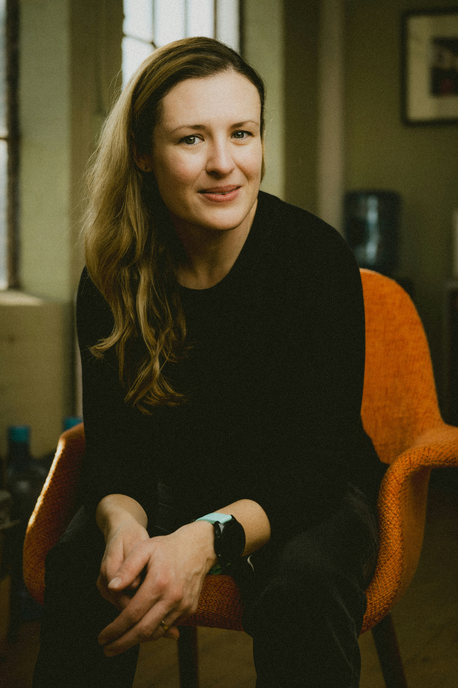
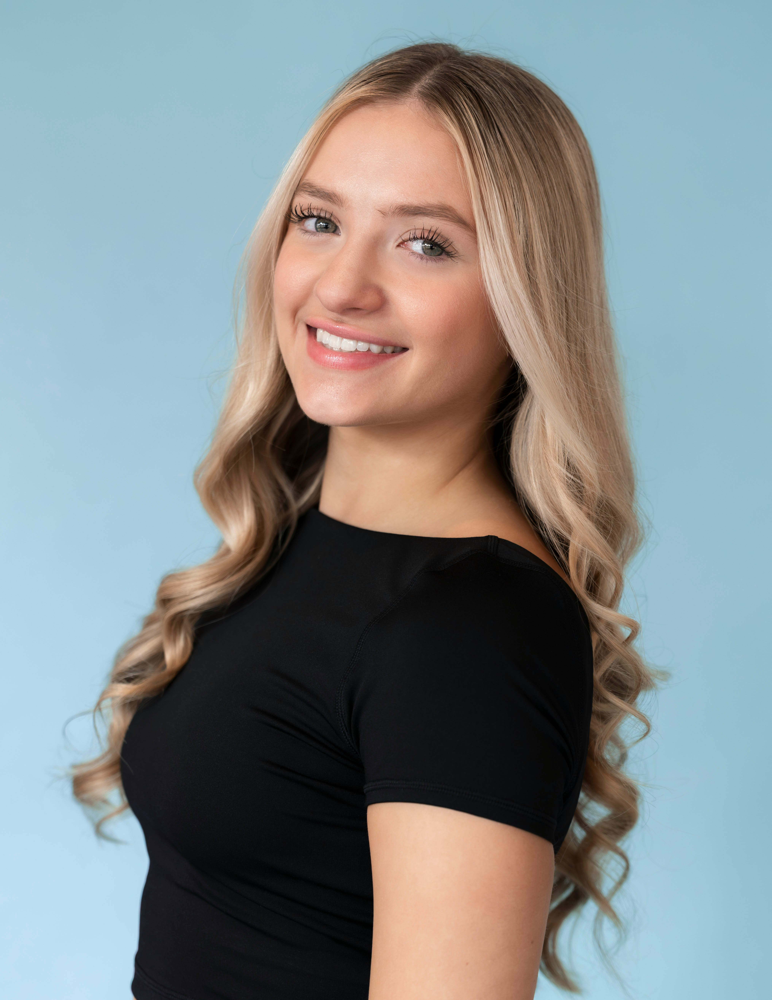
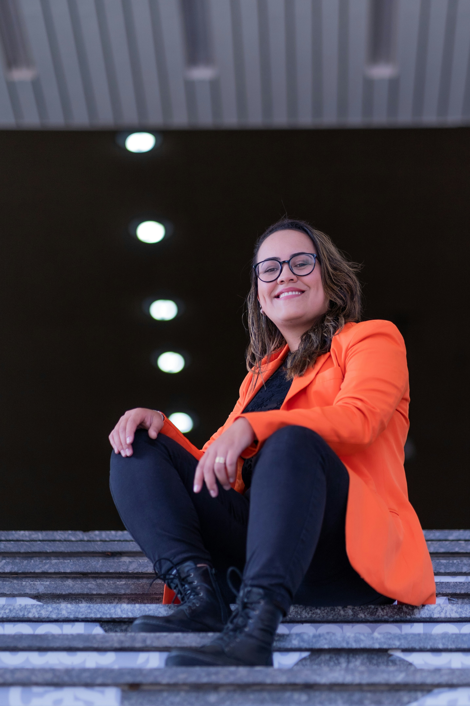
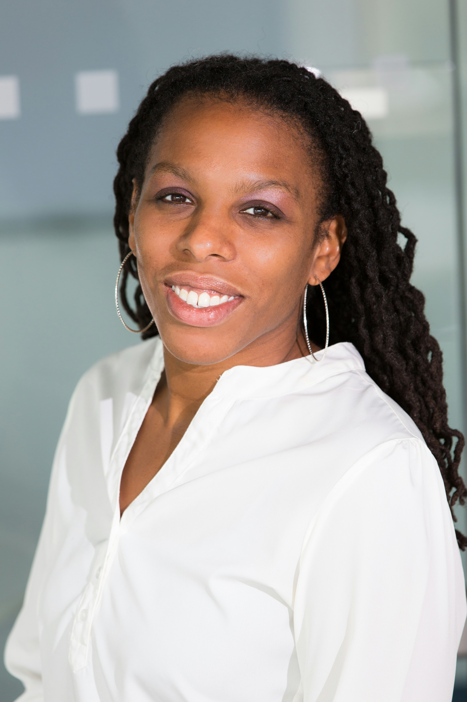

LANGUAGE EDUCATION
Lucia Moreau
Language educator exploring creative teaching methods and learner-centered classrooms.
THE PEOPLE BEHIND THE IDEAS
Researchers, translators, educators, interpreters, and innovators. Meet the voices bringing new perspectives to the future of language.
Explore the Lineup ↓
FEATURED SPEAKER · LINGUISTICS
Linguist, Author & Cultural Researcher
How we speak influences how we see ourselves and one another. Dr. Amara Bennett explores the relationships between language, cultural identity, and belonging, examining the stories that communities preserve through everyday communication.
Her work invites audiences to reconsider whose voices are heard, whose histories are remembered, and how language can help build more inclusive spaces.

FEATURED SPEAKER · LOCALIZATION
Localization Strategist & Technology Advocate
As organizations communicate across borders, the challenge is not simply translating words. It is understanding people. Sofia Reyes explores how localization teams can bring cultural awareness, accessibility, and human judgment into an increasingly automated world.
Her perspective challenges language professionals to embrace new tools without losing sight of the people and communities those tools are meant to serve.

FEATURED SPEAKER · INTERPRETING
Conference Interpreter & Accessibility Advocate
Communication can open doors, but only when people have the opportunity to participate. Nadia Okafor works at the intersection of interpreting, accessibility, and inclusive communication.
Through practical examples and personal reflection, she invites language professionals to think beyond accuracy alone and consider how trust, access, and human connection shape every conversation.
MORE VOICES TO DISCOVER

LANGUAGE EDUCATION
Language educator exploring creative teaching methods and learner-centered classrooms.
LANGUAGE & COMMUNITY
Community language researcher documenting the experiences and knowledge of multilingual communities.
RESEARCH & INNOVATION
Language technology researcher investigating the relationship between emerging tools and human communication.
Speaker names, biographies, and session titles are fictional content created for this conference website concept.